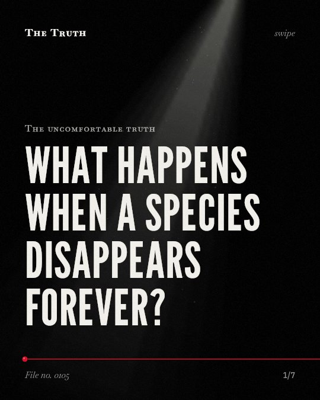

The uncomfortable truth
What happens when a species disappears forever?

We may have already lost 7% of the species on Earth.
Extrapolation from a random sample of land snail species suggests 130,000 extinctions have already occurred.
Supported. At least one solid peer-reviewed study. The evidence backs this.
What the research found
Only 799 (0.04%) of the 1.9 million known recent species are recorded as extinct, which questions the reality of the crisis.
“only 799 (0.04%) of the 1.9 million known recent species are recorded as extinct, questioning the reality of the crisis.”
Study, 2015. Régnier et al., Proceedings of the National Academy of Sciences.
Extrapolation from a random sample of land snail species suggests we may already have lost 7% (130,000 extinctions) of the species on Earth.
“we may already have lost 7% (130,000 extinctions) of the species on Earth.”
Study, 2015. Régnier et al., Proceedings of the National Academy of Sciences.
In a sample of nearly half of known vertebrate species, 32% (8,851/27,600) are decreasing in population size and range.
“In our sample, comprising nearly half of known vertebrate species, 32% (8,851/27,600) are decreasing; that is, they have decreased in population size and range.”
Study, 2017. Ceballos et al., Proceedings of the National Academy of Sciences of the United States of America.
In 177 mammals with detailed data, all have lost 30% or more of their geographic ranges and more than 40% of the species have experienced severe population declines.
“In the 177 mammals for which we have detailed data, all have lost 30% or more of their geographic ranges and more than 40% of the species have experienced severe population declines (>80% range shrinkage).”
Study, 2017. Ceballos et al., Proceedings of the National Academy of Sciences of the United States of America.
If all now-endangered genera were to vanish by 2,100, extinction rates would be 354 (average) or 511 (for mammals) times higher than background rates.
“If all now-endangered genera were to vanish by 2,100, extinction rates would be 354 (average) or 511 (for mammals) times higher than background rates”
Study, 2023. Ceballos & Ehrlich, Proceedings of the National Academy of Sciences.
The average rate of vertebrate species loss over the last century is up to 100 times higher than the background rate.
“the average rate of vertebrate species loss over the last century is up to 100 times higher than the background rate.”
Study, 2015. Ceballos et al., Science advances.
Vertebrate loss is exceeding natural rates.
The average rate of vertebrate species loss over the last century is up to 100 times higher than the background rate.
The crisis is hidden in the numbers.
Official records of extinction are low. That may be why the scale of the loss feels smaller than the data suggests.
This part is our reading of the evidence, not a finding.
The woods behind your house.
You walk past the same trees every day. You do not see the species that are no longer there to occupy the space.
The honest summary
The evidence indicates that vertebrate species and genera are being lost at rates far exceeding natural background levels, though the total number of known extinctions remains low.
Many estimates of the extinction crisis are based on extrapolations or focus on vertebrates, potentially masking the status of invertebrates which represent the bulk of biodiversity.
What will be gone by your time?
Sources
- Ceballos G, Ehrlich PR, Barnosky AD, García A, Pringle RM, Palmer TM (2015). Accelerated modern human-induced species losses: Entering the sixth mass extinction. Science advances. Study, cited 4,204 times.
- Ceballos G, Ehrlich PR, Dirzo R (2017). Biological annihilation via the ongoing sixth mass extinction signaled by vertebrate population losses and declines. Proceedings of the National Academy of Sciences of the United States of America. Study, cited 2,647 times.
- Claire Régnier, Guillaume Achaz, Amaury Lambert et al. (2015). Mass extinction in poorly known taxa. Proceedings of the National Academy of Sciences. Study, cited 275 times.
- Gerardo Ceballos, Paul R. Ehrlich (2023). Mutilation of the tree of life via mass extinction of animal genera. Proceedings of the National Academy of Sciences. Study, cited 118 times.
Also read for this file, not quoted
- Cowie et al. (2022). The Sixth Mass Extinction: fact, fiction or speculation?.
- Ceballos et al. (2020). Vertebrates on the brink as indicators of biological annihilation and the sixth mass extinction.
This file was researched and drafted by software, then checked by rules a model cannot talk its way around: each quote above was matched word for word against the paper, and every number had to appear in it. How files are made.